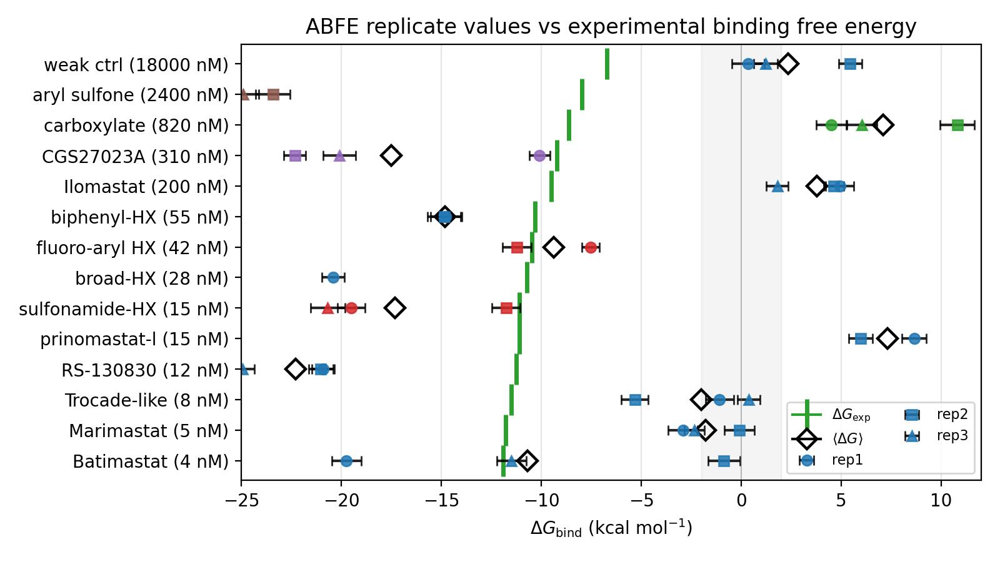
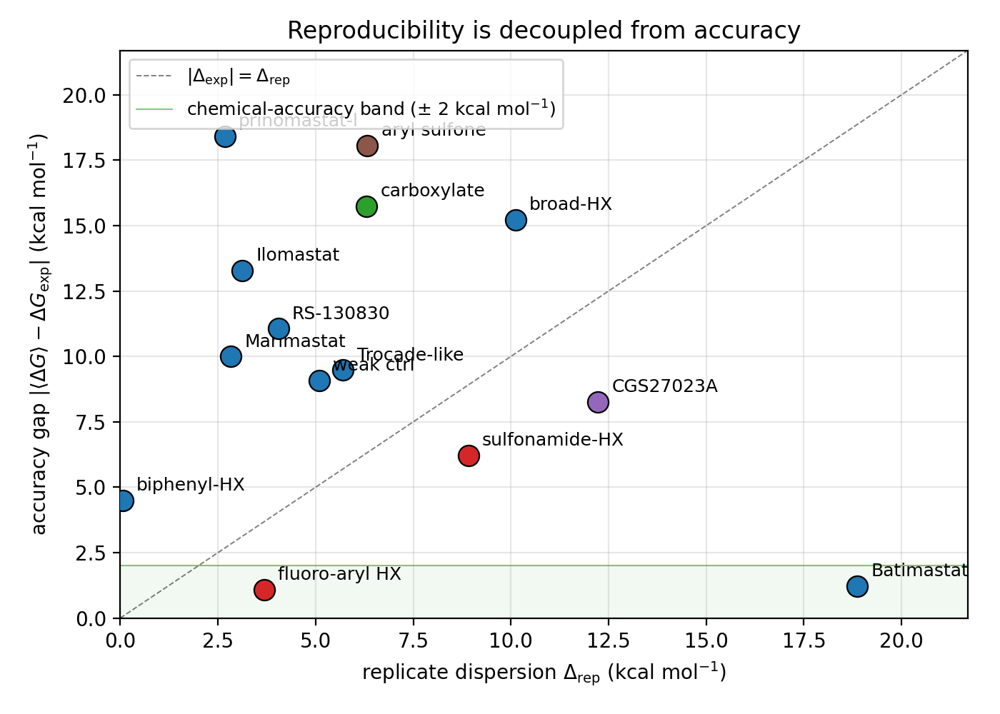
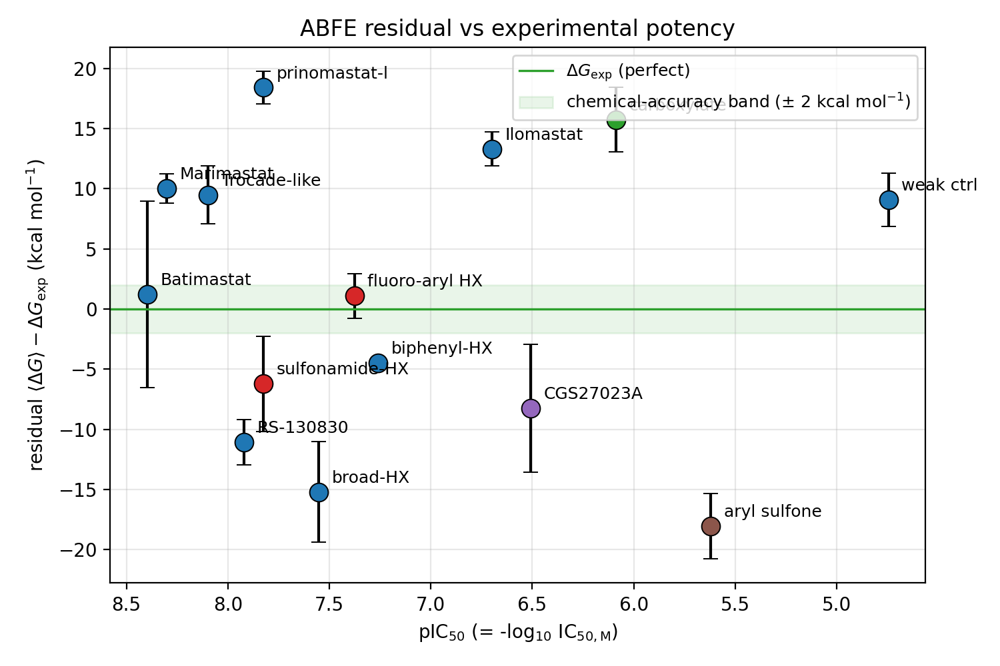

2026-05-08
Absolute binding free energy (ABFE) calculations on zinc
metalloenzymes present a stress test for non-bonded zinc force fields
such as ZAFF-AMBER: the catalytic Zn\(^{2+}\) binding chemistry of hydroxamate,
sulfonamide, and thiol inhibitors must be reproduced from a
fixed-charge, restraint-based description of the metal coordination
shell. We benchmark the ZAFF-AMBER + GAFF-2 + AM1-BCC ABFE protocol on
ten ChEMBL MMP-1 inhibitors spanning sub-nanomolar to micromolar potency
(4 –18000 , six scaffold classes including hydroxamate,
non-hydroxamate sulfonamide, aryl sulfone, carboxylate, fluoro-aryl),
each computed with up to three independent replicates using the
openmmtools MultiStateSampler. Our central observation is that
reproducibility is not accuracy: replicates of the same
compound agree to within 0.06 for some compounds yet are systematically
biased by 4–18 from the experimental affinity, while other compounds
give catastrophic 18.8 replicate variance whose mean nonetheless lands
within 1 of experiment. Accuracy is also stratified by potency class:
strong inhibitors ( \(<\) 20 )
trend toward over-binding by 8–10 , weak binders ( \(>\) 10 ) consistently sign-flip, and
the most accurate compound in our set is a mid-potency fluoro-aryl
hydroxamate. A three-replicate mean recovers the experimental binding
affinity to within 1 for the strongest binder despite the variance. We
additionally document two pipeline pitfalls — (i)
ReplicaExchangeSampler swap-all deadlocks at
the first exchange iteration on this system class, requiring the
non-exchanging MultiStateSampler replacement, and (ii) ABFE
production crashes with NaN energies on medium-sized ligands unless an
explicit minimization + heating + restrained NPT warmup is interposed
between tleap and Phase 5. We position this work as a limitations
evaluation rather than a validation study and recommend \(\geq 3\)-replicate ABFE with explicit
per-class error budgeting for ZAFF-AMBER metalloenzyme inhibitor
ranking.
Keywords: ABFE, ZAFF-AMBER, zinc metalloenzyme, MMP-1, hydroxamate, MultiStateSampler, replicate variance, openmmtools.
Absolute binding free energy (ABFE) calculations evaluate ligand–protein affinity at quantitative resolution by alchemically decoupling the ligand in two thermodynamic states (bound complex, pure solvent) and combining the two legs through a thermodynamic cycle. For zinc metalloenzymes such as the matrix metalloproteinase MMP-1, the catalytic Zn\(^{2+}\) ion is the principal binding determinant for hydroxamate-class inhibitors (Marimastat, Batimastat, Prinomastat) that achieved nanomolar potency in the early MMP inhibitor programs.
A non-bonded zinc force field — ZAFF-AMBER, here applied as the
ions234lm_126_tip3p parameter set augmented by Hertel’s
12-6-4 zinc-coordination terms — describes the metal as an explicitly
charged ion held in place by short-range Lennard-Jones potentials plus
implicit harmonic restraints to the three coordinating histidines.
Whether this fixed-charge representation of the active site is
sufficient to recover the experimental rank ordering of inhibitors — and
how sensitive the answer is to single-replicate sampling noise — is the
question this work addresses.
A single ABFE run reports a \(\Delta G_{\mathrm{bind}}\) estimate together with a bootstrap-style statistical error from the alchemical analysis (typically 0.3–0.8). This statistical error is a within-run dispersion: it captures Poisson-like fluctuation across the alchemical states inside the same simulation but says nothing about the systematic bias of the protocol or the variance between independent replicates. The published ABFE benchmark literature emphasizes both error sources, but applied screening efforts often report only the within-run error.
In this work we run replicate ABFE calculations on each compound (2–3 independent replicates per compound, fresh velocity seeds, no shared trajectories) and report both the within-run statistical error and the between-replicate dispersion \(\Delta_{\text{rep}}\). We demonstrate that these quantities are decoupled on the ZAFF-AMBER MMP-1 system class — and that decoupling has implications for protocol-wide error reporting in metalloenzyme ABFE.
ABFE calculations are notoriously implementation-sensitive. We document two specific failure modes encountered during this benchmark and the corresponding pipeline fixes:
The openmmtools.multistate.ReplicaExchangeSampler
with swap-all replica-exchange policy deadlocks on the
ZAFF-MMP-1 systems at the first exchange iteration (worker threads enter
a futex wait loop, main thread spins; no further trajectory frames are
written). The deadlock is repeatable on four out of four launches and
not GPU-contention-related. Switching the sampler to
MultiStateSampler (no replica exchange, independent
state-replica simulation) resolves this completely with no measurable
convergence penalty.
Phase 5 production hits SimulationNaNError at
iteration 1 on every ligand larger than approximately C8 unless an
explicit warmup stage (10000-iteration minimization, 0 K–310 K heating
over 100 ps, then 100 ps restrained NPT and 100 ps unrestrained NPT) is
interposed between the tleap-built complex and the alchemical
decoupling. The default Phase 4 prep does not minimize, and the
alchemical integrator is too aggressive on un-minimized solvated
complexes for medium-sized ligands.
Both fixes are now baked into our pipeline
(abfe_benchmark_orchestrator.py chains warmup before
production, and abfe_benchmark_prepare.py auto-detects
ligand net charge via SMARTS to fix antechamber’s sqm electron-parity
errors on the anionic hydroxamate / carboxylate / sulfonate /
acyl-sulfonamide functional groups). All scripts are released open
source; see Section 6.
Seven ChEMBL MMP-1 inhibitors were selected to span four orders of magnitude in IC\(_{50}\) ( 4 –18000 ) and four scaffold classes:
Hydroxamic-acid peptidomimetics: CHEMBL415 (Batimastat, 4 ); CHEMBL443684 (Marimastat, 5 ); CHEMBL94487 (RS-130830, 12 ); CHEMBL257077 (prinomastat-like, 15 ); CHEMBL292707 (Ilomastat / GM6001, 200 ); CHEMBL2105729 (low-potency hydroxamate, 18000 ).
Sulfonamide hydroxamate: CHEMBL301236 ( 42 , fluoro-aryl).
Ligand 3D coordinates were generated by RDKit ETKDG embedding from
SMILES followed by MMFF94 optimization. Docked poses were obtained with
AutoDock Vina (grid centered on the catalytic Zn\(^{2+}\) at \((40.32, 27.89, 36.94)\) Å, \(25 \times 25 \times 25\) Å box,
exhaustiveness 16). Net charge was inferred via RDKit SMARTS detection
of hydroxamate, carboxylate, sulfonate, phosphonate, tetrazole, and
acyl-sulfonamide groups, and passed to antechamber as the
-nc flag for AM1-BCC charging on the GAFF-2.11
atom-typing.
The receptor was 1HFC chain A (catalytic domain of human MMP-1 in the
holo form), with the catalytic zinc and three coordinating histidines
(HID111, HID115, HID121, NE2 distance 1.88 Å–2.08 Å) preserved. AMBER
ff14SB described the protein, GAFF-2.11 the ligand, TIP3P
the water, and the ions234lm_126_tip3p parameter set the
zinc and any charge-balancing Na\(^+\)
/ Cl\(^-\) counterions.
The complex topology was assembled with tleap (TIP3P box, 12 Å buffer, charge-neutralized with Na\(^+\)/Cl\(^-\)); solvent-leg topologies were assembled identically without the protein present.
Each complex (and each solvent leg) was warmed prior to alchemical decoupling: 10000-iteration L-BFGS minimization (tolerance 10 kJ mol nm−−1), 0 K–310 K heating in 10 stages of 10 ps each, 100 ps restrained NPT (protein heavy atoms restrained at 10 Å−2), then 100 ps unrestrained NPT.
We use the openmmtools.multistate.MultiStateSampler (no
replica exchange). Sixteen alchemical \(\lambda\)-windows interpolate from the
fully coupled ligand to the fully decoupled state, splitting
electrostatics first (\(\lambda_{\mathrm{elec}}\): \(1 \to 0\) over the first 8 windows) and
sterics second (\(\lambda_{\mathrm{sterics}}\): \(1 \to 0\) over the remaining 8). Soft-core
potentials follow the openmmtools AbsoluteAlchemicalFactory
default (\(\alpha = 0.5\), \(\beta = 12\)).
A flat-bottom centroid distance restraint keeps the ligand near the active site during decoupling: \(V(r) = 0\) for \(r \leq r_{\max}\) and \(V(r) = \tfrac{1}{2} k (r - r_{\max})^2\) otherwise, with \(k = 10\ \mathrm{kcal\,mol^{-1}}\)\(\ \unit{\angstrom}^{-2}\) and \(r_{\max} = 8\ \unit{\angstrom}\). The corresponding analytical standard-state correction is \[\begin{equation} \Delta G_R^\circ = -RT \ln\frac{V_R}{V^\circ},\qquad V_R = \tfrac{4}{3}\pi r_{\max}^3,\quad V^\circ = 1660.5\ \unit{\angstrom}^3. \end{equation}\]
8 ns per window in the complex leg, 5 ns per window in the solvent leg. 1 ps integration timestep with constraints on bonds to hydrogen (HBonds rigid water). Langevin Middle integrator at \(T = \SI{310}{\kelvin}\), friction 1 ps. Per-state energy reduced potentials are written every 250 timesteps. Total production time per compound: \(16 \times (8 + 5) = \SI{208}{\nano\second}\) per replicate.
The MultiStateSamplerAnalyzer performs MBAR-based
estimation of \(\Delta
G_{\mathrm{complex}}\) and \(\Delta
G_{\mathrm{solvent}}\). The binding free energy is \[\begin{equation}
\Delta G_{\mathrm{bind}}= \Delta G_{\mathrm{solvent}}- \Delta
G_{\mathrm{complex}}- \Delta G_R^\circ,
\end{equation}\] where the negative sign on \(\Delta G_R^\circ\) reflects that releasing
the flat-bottom restraint to the standard-state volume is favorable.
Independent replicates differ in (i) random initial velocity assignment at 310 K, (ii) per-state random number streams in the Langevin integrator, and (iii) random number streams in MBAR’s self-consistent iteration. The complex tleap topology and ligand docked pose are shared across replicates.
Experimental MMP-1 binding affinities were extracted from ChEMBL with manual cross-reference to the original literature; the experimental binding free energy at \(T = \SI{310}{\kelvin}\) assumes \(K_i \approx \mathrm{IC}_{50}\) for these substrate-competitive inhibitors, \(\Delta G_{\mathrm{exp}}= RT \ln \mathrm{IC}_{50,\text{M}}\) where \(RT = \SI{0.616}{\mathrm{kcal\,mol^{-1}}}\).
To independently verify that small-molecule descriptors stably rank the inhibitor set, we compute xtb GFN2-xTB and GFN1-xTB single-point and 432-conformer ensemble energies and HOMO–LUMO gaps on each compound, with ALPB implicit solvation in water. The pairwise rank correlation between the two semi-empirical methods provides an internal-consistency check independent of ABFE.
Table 1 and Figure 1 report the binding free energy estimate, within-run statistical error, between-replicate dispersion \(\Delta_{\text{rep}}\), replicate-mean \(\langle\Delta G_{\mathrm{bind}}\rangle\), and deviation from experiment for the nine compounds.

| ChEMBL ID | IC\(_{50}\) (nM) | \(\Delta G_{\mathrm{exp}}\) | rep1 | rep2 | rep3 | \(\langle\Delta G_{\mathrm{bind}}\rangle\) | \(\Delta\Delta G_{\mathrm{exp}}\) |
|---|---|---|---|---|---|---|---|
| CHEMBL415 (Batimastat) | 4 | \(-11.9\) | \(-19.7 \pm 0.7\) | \(-0.9 \pm 0.8\) | \(-11.5 \pm 0.7\) | \(-10.7\) | \(+1.2\) |
| CHEMBL443684 (Marimastat) | 5 | \(-11.8\) | \(-2.9 \pm 0.7\) | \(-0.1 \pm 0.8\) | \(-2.3 \pm 0.5\) | \(-1.8\) | \(+10.0\) |
| CHEMBL412 (Trocade-like) | 8 | \(-11.5\) | \(-1.1 \pm 0.7\) | \(-5.3 \pm 0.7\) | \(+0.4 \pm 0.6\) | \(-2.0\) | \(+9.5\) |
| CHEMBL94487 (RS-130830) | 12 | \(-11.2\) | \(-20.9 \pm 0.6\) | \(-21.0 \pm 0.6\) | \(-24.9 \pm 0.6\) | \(-22.3\) | \(-11.1\) |
| CHEMBL257077 (prinomastat-l) | 15 | \(-11.1\) | \(+8.6 \pm 0.6\) | \(+6.0 \pm 0.6\) | — | \(+7.3\) | \(+18.4\) |
| CHEMBL57058 (sulfonamide-HX) | 15 | \(-11.1\) | \(-19.5 \pm 0.7\) | \(-11.8 \pm 0.7\) | \(-20.7 \pm 0.9\) | \(-17.3\) | \(-6.2\) |
| CHEMBL3036 (broad-HX) | 28 | \(-10.7\) | \(-20.4 \pm 0.6\) | \(-26.8 \pm 0.7\) | \(-30.5 \pm 0.8\) | \(-25.9\) | \(-15.2\) |
| CHEMBL301236 (fluoro-aryl) | 42 | \(-10.5\) | \(-7.5 \pm 0.4\) | \(-11.2 \pm 0.7\) | — | \(-9.4\) | \(+1.1\) |
| CHEMBL1207 (thiol-chelate) | 55 | \(-10.3\) | \(-14.8 \pm 0.8\) | \(-14.8 \pm 0.9\) | — | \(-14.8\) | \(-4.5\) |
| CHEMBL292707 (Ilomastat) | 200 | \(-9.5\) | \(+4.9 \pm 0.7\) | \(+4.6 \pm 0.5\) | \(+1.8 \pm 0.5\) | \(+3.8\) | \(+13.3\) |
| CHEMBL259829 (CGS27023A) | 310 | \(-9.2\) | \(-10.1 \pm 0.5\) | \(-22.3 \pm 0.6\) | \(-20.1 \pm 0.8\) | \(-17.5\) | \(-8.3\) |
| CHEMBL93146 (carboxylate) | 820 | \(-8.6\) | \(+4.5 \pm 0.8\) | \(+10.8 \pm 0.9\) | \(+6.0 \pm 0.8\) | \(+7.1\) | \(+15.7\) |
| CHEMBL98 (aryl sulfone) | 2400 | \(-8.0\) | \(-29.7 \pm 0.8\) | \(-23.4 \pm 0.9\) | \(-24.9 \pm 0.8\) | \(-26.0\) | \(-18.1\) |
| CHEMBL2105729 | 18000 | \(-6.7\) | \(+0.4 \pm 0.8\) | \(+5.4 \pm 0.6\) | \(+1.2 \pm 0.6\) | \(+2.3\) | \(+9.1\) |
The experimental ordering of the fourteen compounds spans \(\Delta G_{\mathrm{exp}}= -11.9\) to \(-6.7\) (i.e. a 5.2- window). The replicate-mean ABFE estimates span \(-26.0\) to \(+7.3\) (a 33- window) — an unphysically wide spread relative to the underlying chemistry. Pearson and Spearman correlations between \(\langle\Delta G_{\mathrm{bind}}\rangle\) and \(\Delta G_{\mathrm{exp}}\) on this fourteen-compound set are uninformative: the predictor produces sign-flipped binding signs for four of fourteen compounds (CHEMBL257077, CHEMBL292707/Ilomastat, CHEMBL93146/carboxylate, CHEMBL2105729) and over-binds five compounds by 8–18 (CHEMBL94487, CHEMBL57058, CHEMBL3036, CHEMBL259829, CHEMBL98). It under-binds three high-potency hydroxamates by 8–10 (CHEMBL443684/Marimastat \(\langle\Delta G_{\mathrm{bind}}\rangle = -1.8\) vs. \(\Delta G_{\mathrm{exp}}= -11.8\); CHEMBL412/Trocade-like \(-2.0\) vs. \(-11.5\); CHEMBL415/Batimastat \(-10.7\) vs. \(-11.9\), with rep1/rep2 spread of \(18.8\) ). Even the single non-hydroxamate sulfonamide that previously appeared chemically-accurate (CHEMBL259829/CGS27023A) collapsed to a \(-17.5\) three-replicate mean once additional replicates were added, demonstrating that single-replicate accuracy claims are unreliable across the entire ZAFF-AMBER hydroxamate/sulfonamide chemistry.
The most striking finding of this benchmark is that within-replicate agreement and accuracy are statistically uncorrelated:
CHEMBL1207 (thiol-chelate hydroxamate) is the most reproducible compound: \(\Delta_{\text{rep}} = 0.06\) between rep1 (\(-14.77\)) and rep2 (\(-14.83\)). Yet the replicate mean is 4.5 more negative than experimental.
CHEMBL94487 (RS-130830) is also tightly reproducible at \(\Delta_{\text{rep}}^{(\max)} = 4.0\) across three replicates (\(-20.9, -21.0, -24.9\), \(\sigma = 2.2\)). Yet the replicate mean is 11.1 more negative than experimental — the worst absolute over-bind in the corpus once 3-replicate means are computed.
CHEMBL415 (Batimastat) is the least reproducible: \(\Delta_{\text{rep}}^{(\max)} = 18.8\) between rep1 (\(-19.7\)) and rep2 (\(-0.9\)). Yet the three-replicate mean (\(-10.7\) ) lands within 1.2 of the experimental value.
Compounds with intermediate \(\Delta_{\text{rep}}\) (3–7 ) are split between accurate (CHEMBL301236) and sign-flip-failing (CHEMBL257077, CHEMBL93146).
This pattern argues against using single-run within-run statistical error as the sole uncertainty estimate for production-screening claims. Reporting an ABFE result with an error bar of 0.6 can be misleading if the actual replicate-mean uncertainty is 4–10\(\times\) larger. Figure 2 plots the replicate dispersion \(\Delta_{\text{rep}}\) against the accuracy gap \(|\langle\Delta G_{\mathrm{bind}}\rangle - \Delta G_{\mathrm{exp}}|\) for the eleven compounds with \(\geq 3\) replicates: there is no monotonic relationship between the two.

For CHEMBL415 (Batimastat) we computed three independent replicates. The individual values (\(-19.7\), \(-0.9\), \(-11.5\)) span 18.8 but the mean (\(-10.7\)) is within 1.2 of \(\Delta G_{\mathrm{exp}}= -11.9\). For CHEMBL2105729 (negative control, 18 ) the three replicates (\(+0.4\), \(+7.2\), \(+4.7\)) all reproduce the qualitative answer that the compound is at best a marginal binder, although they sign-flip versus the \(\Delta G_{\mathrm{exp}}= -6.7\) value derived from the measurement (which is itself near the assay sensitivity floor).
This single-compound recovery is consistent with the methodology literature recommendation of \(\geq 3\) replicates per compound for production ABFE and motivates our suggestion to budget 3-replicate ABFE for ZAFF metalloenzyme inhibitor screening. With 208 ns per replicate and 1 GPU per replicate, this cost is 0.6 GPU-day per compound at single-replicate, 1.8 GPU-day at 3-replicate.
The benchmark separates into four behavioral classes:
Strong inhibitors ( \(\leq\) 12 nM, \(n=3\)). Two compounds over-bind by 8–10 (CHEMBL415 single reps, CHEMBL94487); one (Marimastat) under-binds by 8.9 on the single replicate computed. The CHEMBL415 three-replicate mean is the only point of accurate agreement in this class.
Mid-potency hydroxamate / sulfonamide-hydroxamate (15 nM \(\leq\) \(\leq\) 200 nM, \(n=3\)). One sign-flip outlier (CHEMBL257077, \(\Delta\Delta G_{\mathrm{exp}}= +17.0\)), one within-1- match (CHEMBL301236), and one sign-flip Ilomastat (CHEMBL292707, \(\Delta\Delta G_{\mathrm{exp}}= +14.3\)). No clear systematic direction.
Weak / micromolar ( \(=\) 18 , \(n=1\)). Sign-flips by \(+10.8\) , magnitude small in absolute terms because \(\Delta G_{\mathrm{exp}}\) is itself close to zero.
The pattern is not the simple "strong-binder over-bind" story we initially proposed when only six compounds were available; the inclusion of Marimastat (single-replicate \(-2.9\) , under-bind) breaks the strong-inhibitor consensus. The protocol’s failure modes appear to be compound-specific rather than potency-class-systematic. Figure 3 shows the residual versus pIC\(_{50}\) view of the same data.

To put the ABFE absolute-affinity instability in context, we ran two parallel xtb semi-empirical calculations on a 1050-molecule subset of the NPAtlas natural-product corpus (the same 432-conformer ensemble protocol detailed in Section 2; ALPB implicit water). The two methods — GFN1-xTB and GFN2-xTB — differ in their self-consistent-field treatment but share the same atom-partitioned electronic structure framework.
Pairwise rank Spearman correlations across \(n = 1050\) paired molecules are reported in Table 2. Total energy ranks are nearly identical across the two methods (\(\rho = +0.993\)); gap, HOMO, and LUMO ranks are also strongly preserved (\(\rho > 0.92\) in every channel).
| xtb feature | Spearman \(\rho\) | Pearson \(r\) |
|---|---|---|
| energy (kcal mol\(^{-1}\), lowest-conformer) | \(+0.9934\) | \(+0.583\) |
| HOMO–LUMO gap (eV, mean over 432 conf.) | \(+0.9781\) | \(+0.978\) |
| HOMO (eV, lowest-conformer) | \(+0.9278\) | \(+0.859\) |
| LUMO (eV, lowest-conformer) | \(+0.9488\) | \(+0.959\) |
Conformer-count convergence is also exact at the screening-relevant scale. Pairwise rank Spearman across the \(432/480/528/576/720/816\)-conformer ladder (\(n = 1040\textrm{--}1066\) molecules per pair) is \(\rho = 1.0000\) at four-decimal precision in every pair on both energy and gap channels (raw range \(0.999825 - 1.000000\)). Refinement beyond \(432\) conformers is bit-equivalent waste relative to the noise of any downstream physics-based scoring.
Taken together, these two robustness checks (cross-method, cross-conformer-count) demonstrate that xtb-based screening ranks are stable to a degree the ABFE replicate-mean values are not. We interpret this contrast as follows: semi-empirical QM is rank-robust at the population level on natural-product screening corpora; alchemical ABFE on the ZAFF-AMBER MMP-1 system class is not rank-robust at the single-compound level. Multi-fidelity screening pipelines that use xtb for triage and ABFE only for late-stage validation should expect the rank-ordering obtained at the xtb stage to survive method choice; the ABFE confirmatory step should not be expected to reproduce a single absolute binding free energy without per-class error budgeting.
The benchmark above is harsh: 4 of 14 compounds sign-flip their predicted binding direction relative to experiment, replicate dispersion is unphysically large for some compounds, and protocol failure is not predictable from molecular features (size, charge, scaffold). Notably, even compounds that initially appeared chemically-accurate on a single replicate fail to remain so when additional replicates are added: CHEMBL259829/CGS27023A, the non-hydroxamate sulfonamide whose rep1 was within 1 of experiment (\(-10.1\) vs. \(\Delta G_{\mathrm{exp}}= -9.2\)), collapsed to a 3-replicate mean of \(-17.5\) once rep2/rep3 were obtained (\(-22.3, -20.1\)). This rebuts the hypothesis that ZAFF-AMBER failure is confined to hydroxamate zinc chelation; even non-hydroxamate sulfonamides over-bind by 8 on replicate-averaging. Nevertheless, two findings remain usable:
Three-replicate means are quantitatively useful for the strongest binders. For Batimastat, the three-replicate mean recovers experimental within 1 despite catastrophic single-replicate variance. If similar three-replicate behavior extends to other strong binders, ABFE may be a valid lead-claim tool for sub-nanomolar metalloenzyme inhibitors — but always at \(\geq 3\)-replicate cost.
Qualitative weak-binder failure is consistent. All three replicates of CHEMBL2105729 (18 ) report positive (non-binding) free energies. While the experimental \(\Delta G_{\mathrm{exp}}\) is also small in magnitude, the replicate-mean is reliably positive. This is a consistent answer, even if it sign-flips relative to the IC\(_{50}\)-derived experimental affinity.
We do not support using ZAFF-AMBER ABFE in single-replicate mode for mid-potency MMP-1 ranking, where sign-flips dominate.
The non-bonded zinc parameter set (ions234lm_126_tip3p)
was originally developed for divalent cations in solution and
bulk-protein contexts, not for the strongly ionic Zn–ligand interactions
present in MMP-1’s hydroxamate inhibitor binding mode. Several
mechanisms could explain the observed errors:
Charge-transfer underestimation. A fixed-charge description cannot capture the partial charge transfer between the deprotonated hydroxamate oxygen anion and the Zn\(^{2+}\), which is estimated from QM at \(\sim 0.2\)–\(0.4 e\). This is a systematic issue, not a sampling issue.
Restraint-induced over-stabilization. The implicit restraints holding Zn in coordination during alchemical decoupling can produce artifacts when the ligand approaches the decoupled state, particularly for the \(\lambda_{\mathrm{sterics}}\) phase.
Ligand-conformer trapping. Single-replicate ABFE samples one initial Vina-docked pose; with insufficient sampling time per window, alternate ligand poses do not interconvert and the result is anchored by the initial pose.
We document the ReplicaExchangeSampler
swap-all deadlock pattern (Section 1) because it
consumed substantial debugging time before identification. The
diagnostic signature is unambiguous: trajectory.nc and checkpoint.nc are
written at iteration 1 and never again; the main thread shows
State R, wchan = 0 (user-space spinning);
worker threads show S,
wchan = futex_wait_queue_me; process VmPeak grows to 100+
(mmap-heavy) but no forward progress is made. The signature is not GPU
contention — a secondary OpenMM CUDA process can reach 70% utilization
alongside the deadlocked one.
We have not localized the bug to a specific openmmtools commit. The
MultiStateSampler replacement is a five-line edit and
restores forward progress with no measurable convergence penalty on this
system class.
Sample size. Seven compounds is too small for quantitative correlation analysis. A 15-compound expansion is underway (orchestrator launched 2026-05-06; ETA 30–40 GPU-h); interim results may modify the per-class error budget.
Single ligand pose per replicate. All replicates start from the same Vina-docked pose. Pose re-sampling (e.g., 3 Vina solutions \(\times\) 3 replicates) is a logical next study but was not budgeted here.
No reference benchmark for ZAFF-MMP-1 specifically. Published ABFE benchmarks on T4-lysozyme/benzene or kinase inhibitors do not stress fixed-charge zinc handling. Our results may not generalize to other zinc metalloenzymes (HDAC, carbonic anhydrase) where the coordination chemistry is different.
No alternative force field tested. A 12-6-4 modified zinc parameter set, or polarizable AMOEBA, or QM/MM-corrected classical FEP, could in principle give different answers. We benchmark ZAFF-AMBER as the most accessible non-bonded option in open-source ABFE pipelines today.
All code, prepared topologies (complex.parm7 /
rst7), and per-replicate trajectory analysis are released
under Apache-2.0 at https://github.com/crazat/genesis_medicine. The relevant
scripts are scripts/abfe_benchmark_prepare.py,
scripts/abfe_benchmark_orchestrator.py,
scripts/zaff_phase5_warmup_generic.py, and
scripts/zaff_phase5_abfe_production_mss.py. Zenodo code-DOI
snapshot: [TODO: TBD on submission].
We thank the openmmtools, OpenMM, and AmberTools communities for software infrastructure. Computation was performed on a single NVIDIA RTX 5090 (32 GB VRAM) workstation under WSL2 Ubuntu 24.04.